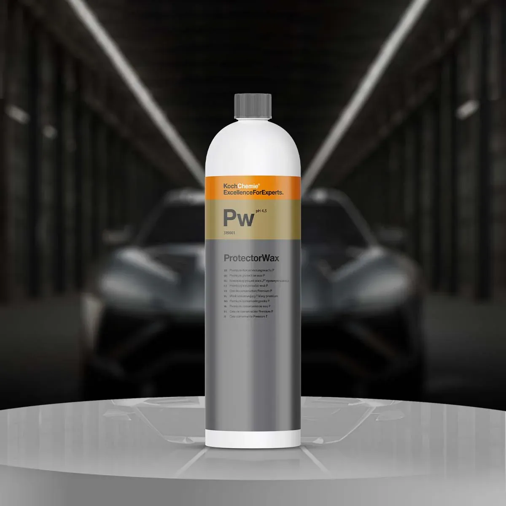
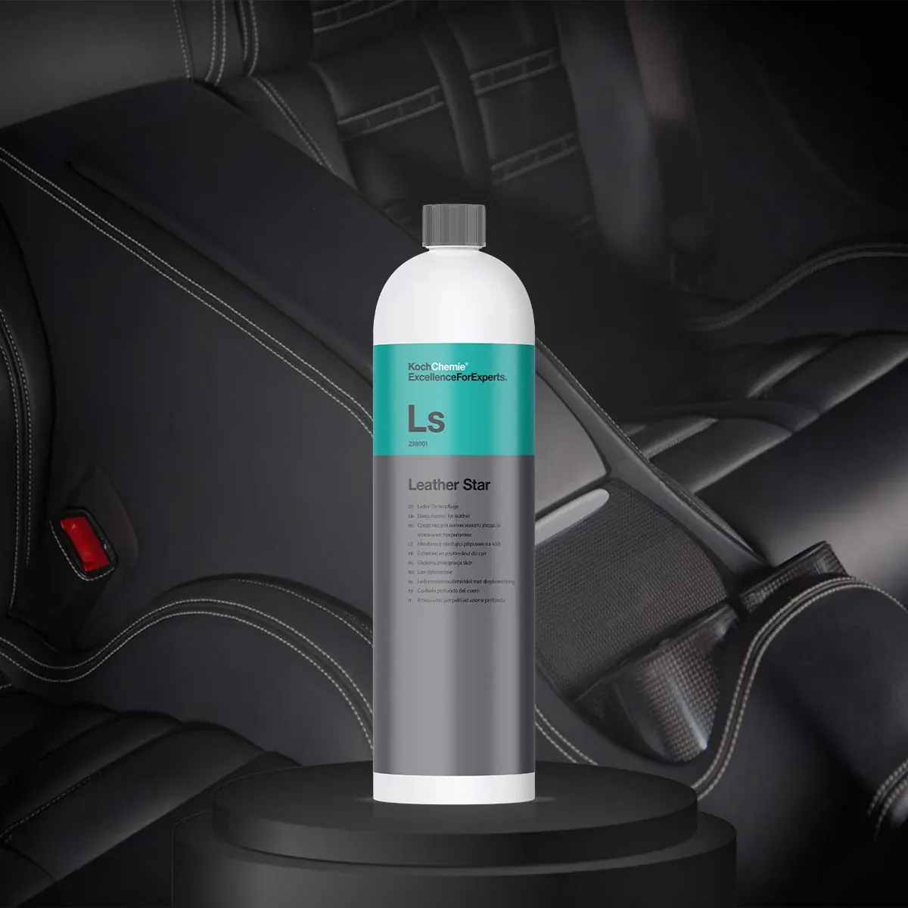
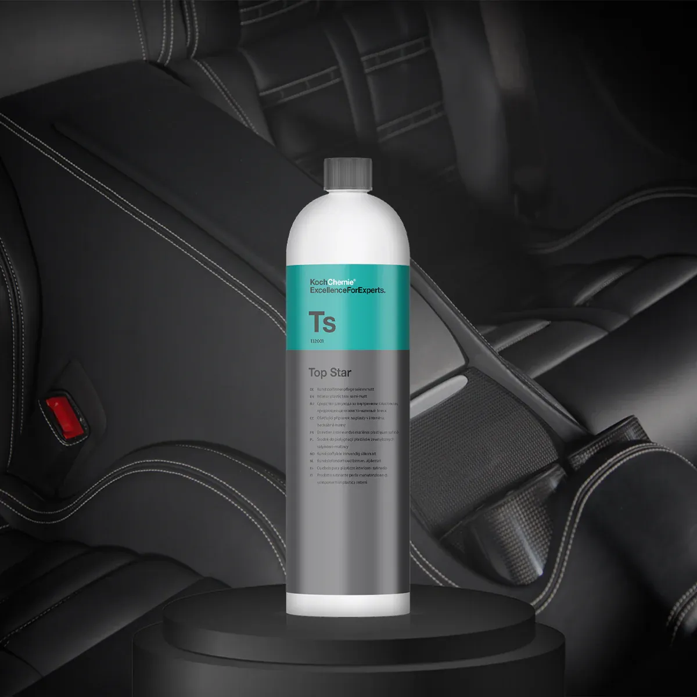

Hvilke tilkøb tilbyder vi?
Sæderens
Der gemmer sig enormt meget skidt og møg i dine bilsæder. Hvornår har du sidst fået dem gjort rent?
Vores sæderens er en dybdegående behandling, der fjerner snavs, pletter og lugt fra bilens sæder. Vi bruger specialiserede rengøringsmidler og teknikker for at sikre, at dine sæder bliver rene og friske igen.
Behandlingen arbejder midlet ned i fibrene og trækker det op igen sammen med snavset. Det er derfor, sæderens også rykker ved lugt og ikke kun ved de pletter, man kan se. Har der været børn, hund eller mange år på bagen i bilen, er det typisk her, den største forskel ligger.
I langt de fleste tilfælde forsvinder pletterne helt. Meget gamle eller ætsende pletter kan i sjældne tilfælde efterlade et svagt spor — det siger vi til, hvis vi kan se det på forhånd.
Vores sæderens tilkøbes for 80,- pr. sæde. Den er allerede inkluderet i vores to premiumpakker, så der skal du ikke betale for den oveni.
Fjernelse af hundehår
Hunde hår sætter sig fast i bilens stof, sæder og tæpper, og kan være meget svært at få ud.
Vi fjerner hundehåret så din bil bliver ren og frisk igen.
Hundehår kan ikke bare støvsuges væk. Hårene vikler sig ind i stoffets fibre og sætter sig fast med statisk elektricitet, og derfor kræver det særskilt arbejde med redskaber, der trækker hårene ud i stedet for at suge hen over dem.
Prisen afhænger af, hvor meget der er, og hvor godt det sidder fast. Vi vurderer det ved ankomst og siger prisen, før vi går i gang — du får aldrig en højere regning, end vi har aftalt.
Vores fjern af hundehår tilkøbes for 149-399,- ekstra.


Voksbehandling
Voksbehandlingen hjælper med at beskytte bilens lak og give den en skinnende glans.
Voksen lægger sig som en barriere mellem lakken og alt det, der ellers sætter sig i den: vejsalt, fugleklatter, insekter og vejstøv. Bilen bliver samtidig nemmere at holde ren, fordi snavset har sværere ved at bide sig fast.
Laget slides gradvist af igen afhængigt af vejr og hvor ofte bilen vaskes. Det er især oplagt at få lagt på, når saltsæsonen slutter, eller inden bilen skal sælges.
Vores voksbehandling tilkøbes for 185,- ekstra.


Læderbehandling
Læderbehandlingen hjælper med at beskytte bilens læder og give den en skinnende glans.
Læder i en bil udsættes for sol, varme og friktion hver eneste dag. Uden behandling tørrer det langsomt ud, bliver stift og revner til sidst — næsten altid først på førersædets sidevange, fordi det er der, man glider ind og ud.
Behandlingen tilfører fugt tilbage i materialet og lægger et lag, der beskytter mod UV og slid. Det er billig forsikring mod en dyr ompolstring, og den betaler sig mest at få gjort, før skaden er sket.
Vores læderbehandling tilkøbes for 125,- ekstra. Den er inkluderet i vores to premiumpakker.


Plastikpleje
Plastikplejen hjælper med at genskabe originaludseendet på din bil og give den et opfriskende look.
Det sorte plast i en kabine bliver gråt og støvet med årene. Det er UV-lys, der langsomt blegner overfladen, og det sker så gradvist, at man sjældent lægger mærke til det selv — før man ser en bil, hvor det er blevet gjort.
Rent visuelt er det ofte den behandling, der rykker mest for pengene, fordi den ændrer hele indtrykket af kabinen på én gang. Også på biler med mange år på bagen.
Vores plastikpleje tilkøbes for 185,- ekstra. Den er inkluderet i vores to premiumpakker.


Ofte stillede spørgsmål om tilkøb
Det vi oftest bliver spurgt om, når folk skal vælge til.
Kan tilkøb lægges på alle pakker?
Ja. Alle fem tilkøb kan lægges oven på enhver pakke. Sæderens, læderbehandling og plastikpleje er dog allerede inkluderet i vores to premiumpakker, så dem skal du ikke betale for oveni.
Hvad koster sæderens?
Sæderens koster 80 kr. pr. sæde. Det vil sige 160 kr. for forsæderne eller 400 kr. for alle fem sæder i en almindelig personbil.
Hvorfor svinger prisen på fjernelse af hundehår så meget?
Fordi mængden gør det. Prisen ligger mellem 149 og 399 kr. afhængigt af, hvor meget hår der er, og hvor godt det sidder fast. Vi vurderer det ved ankomst og siger prisen, før vi går i gang.
Kan I fjerne alle pletter fra sæderne?
I langt de fleste tilfælde ja. Meget gamle eller ætsende pletter kan i sjældne tilfælde efterlade et svagt spor – det siger vi til, hvis vi kan se det på forhånd.
Hvornår giver voksbehandling mest mening?
Når saltsæsonen slutter, eller inden bilen skal sælges. Voksen lægger et beskyttende lag på lakken, som både giver glans og gør bilen nemmere at holde ren.
Skal jeg vælge tilkøb, eller er premium billigere?
Skal du bruge to eller flere af sæderens, læderbehandling og plastikpleje, er en premiumpakke som regel billigere end at lægge dem på enkeltvis. Er du i tvivl, så ring – vi regner det ud med dig.